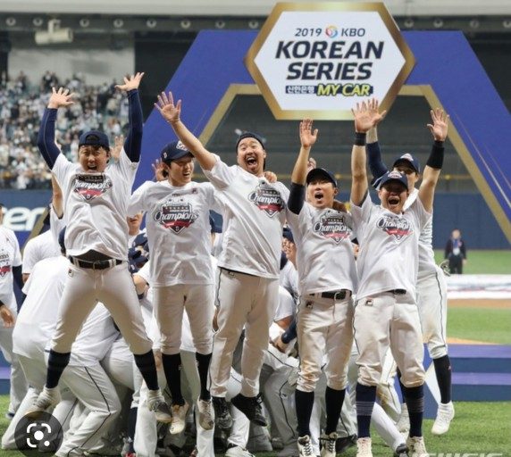

두산베어스는 두산그룹에서 운영하는 KBO 리그의 프로야구단. 연고지는 서울특별시이며, 홈구장은 송파구 잠실동에 위치한 서울종합운동장 야구장을 LG 트윈스와 공동으로 사용하고 있다. 서울을 연고지로 삼는 3개의 프로야구단[14] 중 한 팀이다. 원년 6개 구단 가운데 가장 먼저 프로야구단으로서 창단식을 가진 팀이다. 단, 창단 자체는 1975년에 아마추어 팀으로 창단한 롯데 자이언츠가 먼저다.
삼성 라이온즈, 롯데 자이언츠 등과 마찬가지로 KBO 리그 원년에 창단된 프로야구단 중 하나로 두산프로야구단 OB 베어스가 1982년 창단 당시의 구단명이었다.[15]
